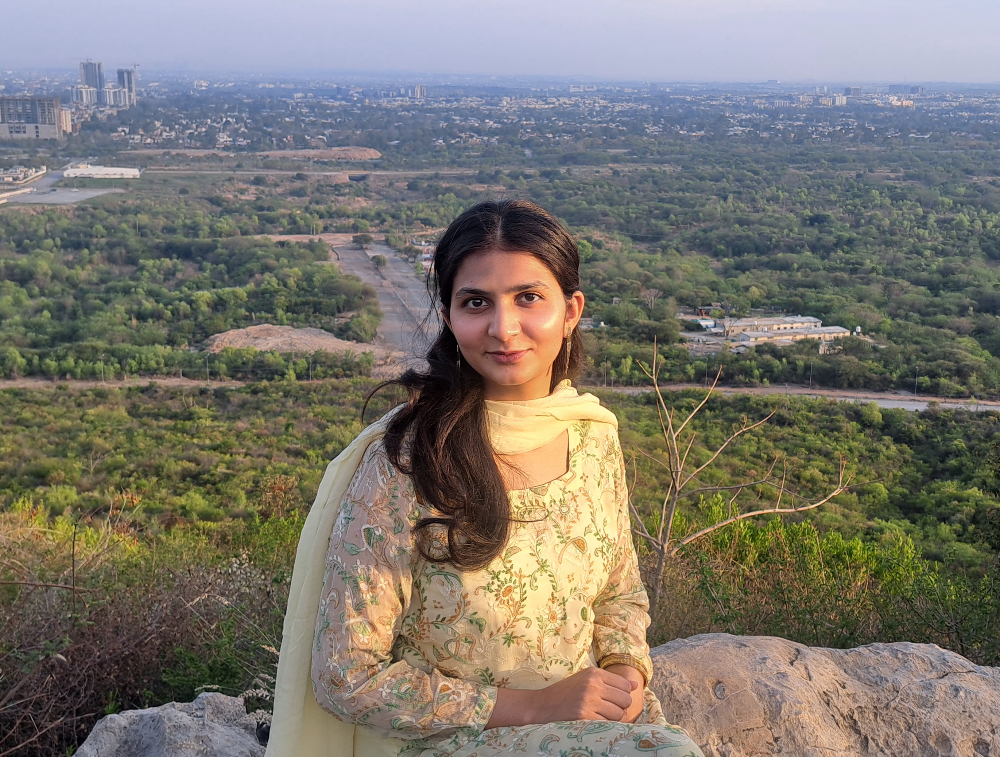

BFBushra Fatima
Hi, I'm Bushra! I'm an AI/ML engineer with roots in computer vision, bridging into multimodal and generative AI. I'm currently a Mitacs Globalink Research Intern at Concordia University, working on multimodal fake news detection — VLMs, concept bottleneck models, and fusion techniques that let a model reason about the verdict it reaches.
My research is backed by three internships spanning industry and government, and I'm building toward a research identity in trustworthy multimodal AI as I apply to fully-funded PhD programs.
Latest
Graduated with a BS in Computer and Information Sciences from PIEAS, CGPA 3.58/4.0.
Selected for the Mitacs Globalink Research Internship at Concordia University — multimodal fake news detection.
Selected for the McKinsey Forward Learner Program.
Experience
- Researching LLM-based multimodal fake news detection, integrating VLMs, concept bottleneck models, and fusion techniques.
- Working toward models that can reason about the verdict they reach, not just output a label.
- Developed an IBM Watsonx Assistant for GreenKeyper DVIR, a fleet-inspection platform and mapped the project lifecycle in JIRA
- Researched season-based disease patterns in plants for early crop-protection measures and joined secretariat level meetings.
- Ran exploratory data analysis with NumPy, Pandas, Matplotlib and Seaborn to surface trends and anomalies in large datasets.
Research Projects
LLM-based Multimodal Fake News Detection
Ongoing research fusing VLMs and concept bottleneck models so an LLM can classify news and explain its reasoning.
Multimodal Forgery Detection in Identity Documents
Fuses facial features with document metadata via VLMs and transformers to verify identity and flag forgery. Shipped as SecureID — a Flask + React app.
Publications
- Patent application (in progress) — AI-based ID generation and verification